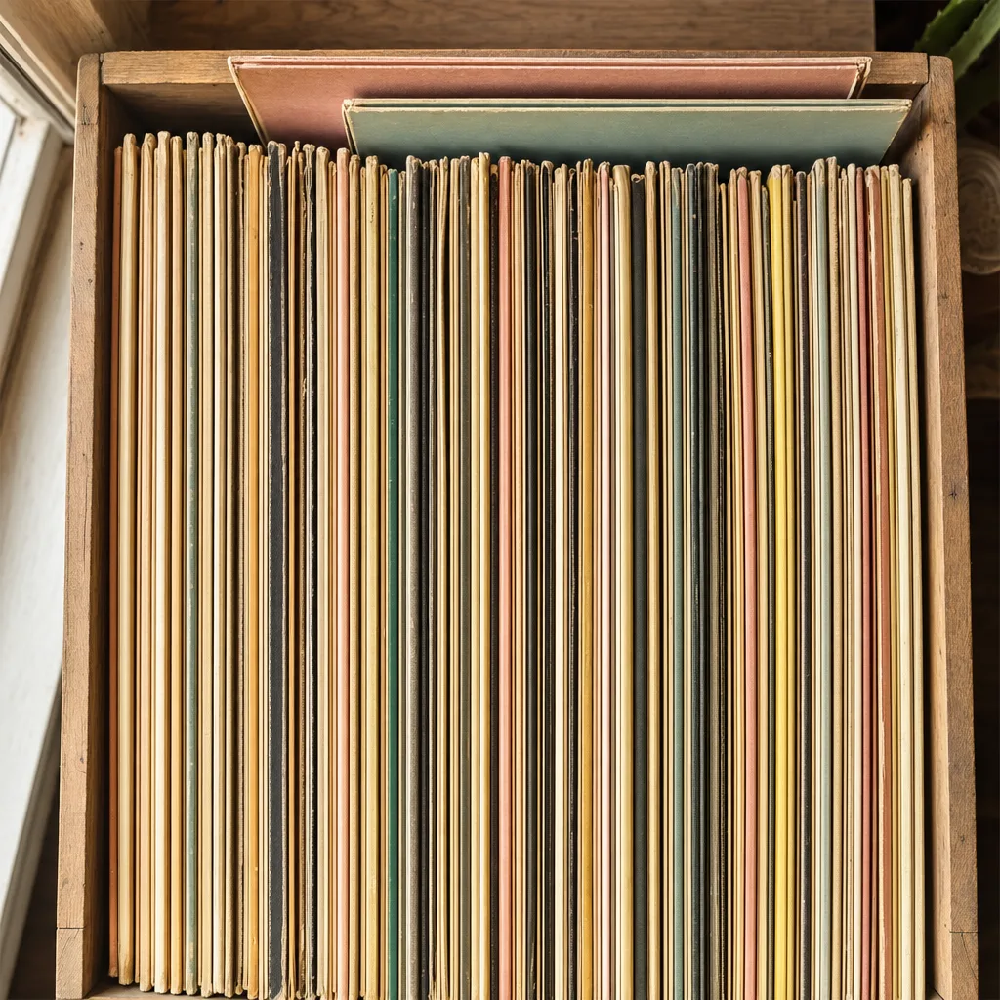
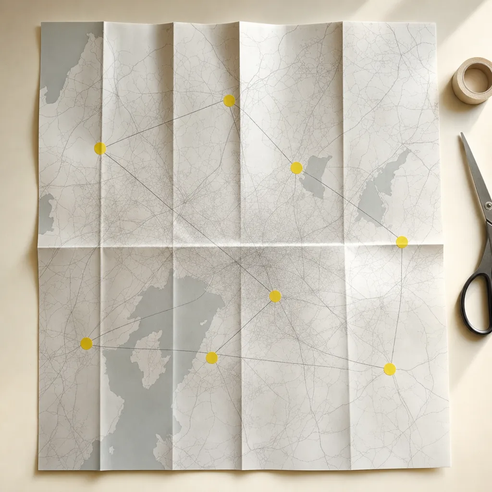

EL TÍO ARTISTAS
Tienes números grandes en todos lados y no eres dueño de ninguno.
Los seguidores están en una plataforma y los oyentes en otra, y las dos deciden a quién le muestran qué. Cuando llega el momento de abrir una plaza nueva, la decisión se toma con lo que diga un promotor.
USD 99, pago único.
- Prestada
- Los oyentes y los seguidores. Grandes, y de la plataforma.
- Propia
- A los que puedes escribir mañana sin pedirle permiso a nadie.
Dibujo de ejemplo. Las proporciones son las de un proyecto sin lista propia, que es el punto de partida más común.
LADO A
Lo que decide si el proyecto es tuyo.
Cuatro cortes. Aquí está el trabajo que cambia la conversación con un promotor.
A1LA AUDIENCIA PRESTADA
Un seguidor no es un contacto, y esa diferencia cuesta plata.
Un número que se ve bien en una captura y del que no se puede sacar una sola dirección de correo no es un activo. Es una métrica de otro.

A2EL MAPA
Dónde hay gente de verdad, ciudad por ciudad.
Una lista propia de fans, con ciudad, país y contacto, y sobre eso el mapa de dónde está la gente de verdad.

Una lista propia con ciudad, país y contacto, y encima de eso el mapa. Deja de discutirse si conviene abrir una plaza: se mira dónde ya hay gente que dijo que sí, y con eso se arma la ruta.
El incentivo lo pone el artista: un tema sin publicar, una preventa antes que nadie, un set privado, guestlist. Sin incentivo no se capta nada, y lo decimos en la primera reunión. Esto es un sistema montado sobre herramientas que ya existen, no una plataforma nuestra.
A3LA LISTA PROPIA
Cuatro cosas, y ninguna es un truco.
El incentivo
Sin algo a cambio nadie deja su correo, y lo que se ofrece lo elige el artista. Se prueba con uno, se mide cuánto captó y si no funciona se cambia el incentivo, no el sistema.
El permiso
Se capta con consentimiento explícito y queda registrado. Una lista sin permiso no es un activo, es un problema.
La ciudad
Cada contacto entra con su ciudad. Sin geografía, la lista sirve para mandar un correo y para nada más.
Lo que queda
La lista es tuya, a tu nombre y con tus accesos. Si mañana dejamos de trabajar juntos, te la llevas.
A4EL BOOKING CON EVIDENCIA
Un proyecto con 12.000 oyentes al mes y unas quince fechas al año
- QUÉ MIRARÍAMOS
- De dónde son los oyentes según lo que las plataformas ya muestran, qué material sin publicar hay disponible como incentivo, y qué contactos propios existen hoy, que suelen ser cero.
- QUÉ BUSCARÍAMOS
- Convertir una parte chica de esa audiencia prestada en lista propia, y ver si las ciudades donde hay escucha coinciden con las ciudades donde viene tocando.
- QUÉ ABRE
- Si aparecen 120 personas propias en una ciudad donde nunca tocó, eso es una conversación con un promotor que antes no existía.
Lo que mediríamos: cuántos contactos propios se captan por campaña, y de qué ciudades.
LADO B
Lo que lo sostiene.
Tres cortes. El lado B es el lado menor, y sin él el lado A no suena.
B1LA CAJA
Ocho piezas, y se pasan como se pasan los discos.
Lo que se implementa. Las tres primeras son del rubro y las cinco que siguen son la base, que va siempre y sostiene a las otras tres.
- 01Fan Map
El mapa de dónde está la gente de verdad, sobre tu lista propia.
- 02Booking Radar
El Fan Map cruzado con señales de escucha, territorios, salas y promotores, para ver qué mercados vale la pena trabajar y con quién.
- 03Track Finder
Una referencia entra y salen temas parecidos. Utilidad de trabajo para armar sets y buscar música.
- 04CRM
Sobre el que ya tengas. Si no hay, se monta con el circuito real del proyecto.
- 05Tu base, ordenada
Una fila por persona y no por interacción, que es como suele estar.
- 06Newsletter propio
Tu lista para anunciar antes que nadie, sin pagarle a una plataforma por llegar a tu propia gente.
- 07Web propia y editable
El sitio del proyecto, con las fechas y el catálogo, que se actualiza solo.
- 08Chatbot que atiende
Contesta lo de siempre y deriva lo que no sabe con la conversación entera adelante.
Pasa el cursor por encima de un lomo para sacarlo, o recorre la caja con las flechas del teclado.
Se apoya en proveedores externos. No es tecnología propia y no lo vamos a decir.
B2EL AUDIT
Siete áreas, y el rubro encima.
El Audit no mira una canción: mira el proyecto. Un cuestionario guiado de 15 a 25 minutos, media hora de llamada mano a mano, y de ahí sale la hoja de ruta.
- AUDIENCIA
Cuánta gente te sigue y a cuánta le puedes escribir mañana sin depender de nadie.
- BOOKING
Cómo llegan las fechas y qué se sabe de cada plaza y cada promotor.
- DATOS
Dónde escucha tu gente de verdad, y si eso coincide con dónde tocas.
- CONTENIDO
Qué se publica, quién lo produce y cuánto tiempo se lleva.
- ATENCIÓN
Fans y promotores escribiendo al mismo lugar, sin separar.
- EQUIPO
Qué podría resolver el management con las herramientas que ya existen.
- HERRAMIENTAS
Con qué se trabaja hoy y qué se hace a mano por falta de sistema.
EL AUDIT
USD 99
Pago único, el mismo para los siete rubros. Se descuenta de cualquier desarrollo que contrates después.
Auditar mi proyectoSe entrega en 24 a 48 horas hábiles.
Lo que cueste implementar sale en el mapa, con el alcance de cada cosa al lado. No se cotiza antes de medir.
B3LO QUE PREGUNTAN
Lo que suelen preguntar.
Ya tengo muchos seguidores.
Sí, y no son tuyos. La pregunta es a cuántos les puedes escribir mañana sin depender de nadie.
Eso lo hace mi community manager.
Publicar, sí. Captar con consentimiento y leer geografía es otro trabajo.
¿Y si el incentivo no funciona?
Se prueba con uno y se mide. Si no capta, se cambia el incentivo, no el sistema.
¿Los datos son míos?
Sí, y quedan tuyos aunque dejes de trabajar con nosotros. Es la única razón por la que vale la pena hacerlo.